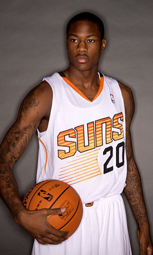

|  |
Матчи |
41 |
|
Передачи (всего/среднее) |
44 |
1.1 |
| В основе |
2 |
|
Подборы в защите (всего/среднее) |
47 |
1.1 |
| Время (всего/среднее) |
534:50 |
13:03 |
Подборы в атаке (всего/среднее) |
27 |
0.7 |
| Очки (всего/среднее) |
231 |
5.6 |
Подборы (всего/среднее) |
74 |
1.8 |
| 2-очковые броски (всего/среднее) |
67/160 |
1.6/3.9 |
Перехваты (всего/среднее) |
18 |
0.4 |
| 2-очковые броски (% реализации) |
41.9% |
|
Потери (всего/среднее) |
48 |
1.2 |
| 3-очковые броски (всего/среднее) |
12/41 |
0.3/1 |
Блокшоты (всего/среднее) |
9 |
0.2 |
| 3-очковые броски (% реализации) |
29.3% |
|
Блокшоты соперника (всего/среднее) |
21 |
0.5 |
| Штрафные броски (всего/среднее) |
61/83 |
1.5/2 |
Фолы (всего/среднее) |
55 |
1.3 |
| Арчи Гудвин |
Штрафные броски (% реализации) |
73.5% |
|
Коэффициент полезности (всего/среднее) |
108 |
2.6 |